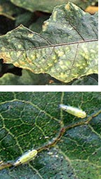

| Home |
| SUNFLOWER |
| 1. Leaf Hopper |
| 2. Capitulum Borer |
| 3. Tobacco Caterpiller |
| 4. Bihar Hairy Caterpiller |
| 5. Semi Looper |
| 6. Cutworms |
| 7. Stink Bug |
| 8. Plant Bug |
| 9. Black Hairy Caterpiller |
| 10. Ash Weevil |
| Questions |
| Download Notes |
PESTS OF SUNFLOWER :: Major Pests :: Leaf Hopper
1. Leaf hopper - Amrasca biguttula biguttula (Cicadellidae: Hemiptera)
Damage symptoms:
Both nymphs and adults suck the sap from the under surface of leaves. Leaves become crinkled and cup shaped, growth gets stunted, brownish red colour develops on the edges of leaves and the condition is known as “hopper burn”. They also attack brinjal, bhendi, cotton and potato.
Bionomics: Adult is a small, slender green insect. Eggs are laid singly in the leaf veins. Egg period is 4-11 days. Nymphs green, wedge shaped. Nymphal period is 7 days. Breeding is noted throughout the year.
Management
|
 |